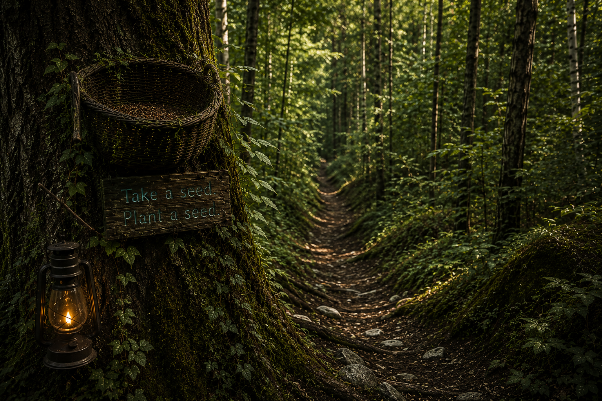

Familiar faces, unfamiliar places.
Meet our growing cast, from the wandering storyteller Patch to Back Alley Gary, a pigeon with a rather unusual history. Expect artwork, odd adventures and a sense of humor.
Welcome to Wrong Way Dogz Art. We make art, music, stories, unusual characters and curious little things. Somewhere along the way, we started building a world of our own.
Look around
A collection of creative experiments. Some are finished, some are finding their feet, and some are taking the scenic route.
Meet our growing cast, from the wandering storyteller Patch to Back Alley Gary, a pigeon with a rather unusual history. Expect artwork, odd adventures and a sense of humor.
Original music, imaginary broadcasts and curious recordings, including Unusual Findings from the Department of Existence.
Stories, short videos and the beginnings of a bigger universe. A cabin, a few wandering characters and an unreasonable number of questions.
Sticker art, digital wallpapers, a nature-inspired calendar and playful little experiences. We like making things simply to see what happens.

Echo Valley is the interactive world we're building around our characters, stories, games and discoveries. Our goal is a place to wander, explore and find something unexpected.
We're taking it one trail at a time. This site will stay open while the world grows.
We're putting together a public home for our work while developing the larger Echo Valley experience. The focus for now is making things, finishing things and sharing them along the way.
An independent creative workshop for curious people of all ages. Our approach is simple: notice, wonder, experiment, make, learn, reuse and wander. We believe creativity can lead somewhere interesting even when you don't know exactly where you're going.
Part of BGCIB — Become, Grow, Come Into Being.